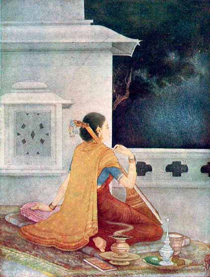

‘Expectation’
(By Anisetti Subba Rao)

She–the ‘Vasavasajjika’–waits far into the cool star-lit night for the coming of her Lord. In the stillness of her expectation, her song fades away and her fingers cease to move the strings of the ‘Tambur’ (a ‘Sruti’ instrument of South India.)
The colours are ‘warm,’ the deep green of the tree merges into the intense blue of the night, and the chaste marble re-flects the rosy thoughts of the damsel. The young artist, Subba Rao, formerly a student of Sjt. Promode Kumar Chatterjea, has profited by his stay at the Indian Society of Oriental Art, for, we see in this picture a happy blending of the masterly technique of Promode Babu with the minute finish of Babu Khitindranath Mazumdar–a rare union of subtle movement and repose.
This artist's picture ‘Savitri and Satyavan’ was reproduced in the very first number of ‘Triveni’ (January 1928).
A. B.